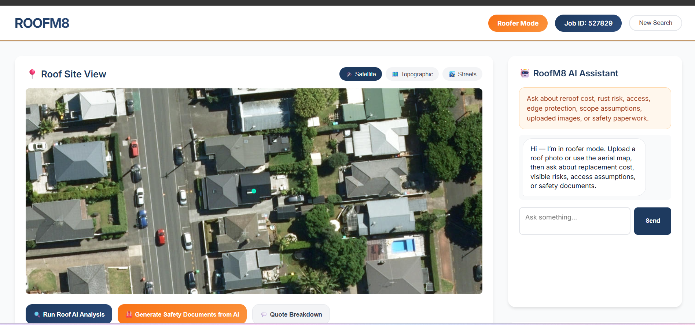

Workflow automation for quoting and site documentation
RoofM8 shows the practical side of the model: combine property context, aerial imagery, measurements, cost logic, and AI-assisted document generation inside one usable workflow.
- Quoting and estimate support
- Safety document generation
- Property-aware site context